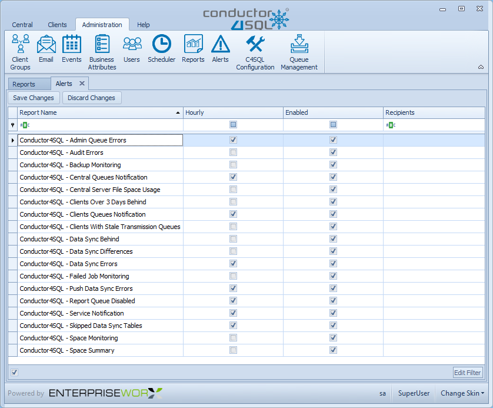

Alerts Administration Overview
The Alerts Administration screen is used for configuring the Conductor4SQL email alerts.

Enabling Alerts
Tick any of the checkboxes under the Enabled column to enable an email alert.
Make an Alert an Hourly Job
Tick any of the checkboxes under the Hourly column to make an email alert an hourly job.
Tip
Remember to click on the Save Changes button to save your Email Alert configuration to the database, or, click Discard Changes to discard your changes.
Email Report Definitions
| Email Report Name | Email Report Description |
|---|---|
| Admin Queue Errors | Sent when the pulse check message has failed at a client (Usually when a database is in startup or recovery, or a sync database has been dropped) |
| Audit Errors | Sent if a client has an error or is missing its event auditing queue (Audit Notification Queue) |
| Backup Monitoring | Sent if a client has a database where the last backup date exceeds the threshold for old backups, as well as databases with no backups. Databases can be excluded in this report by adding them to the C4SqlConfig.Backup_Report_Exlusions table at central. The SyncWorx database, Scheduled Sync staging databases and system databases are excluded from this email report by default. |
| Central Queues Notification | Sent when a message has failed to process at central (Usually data sync errors related to DDL changes, or save to table errors) |
| Central Server File Space Usage | Sent every day showing the details of all central databases |
| Clients Over 3 Days Behind | Sent when a client has been unavailable for 3 days or more. The C4SQL investigation process will provide as much detail as possible on why the clients are unavailable |
| Clients Queues Notification | Sent when the client queue (excluding data sync queues) are down at the client due to invalid message |
| Clients With Stale Transmission Queues | Sent when a client isn't behind but there are messages stuck on the transmission queue |
| Data Sync Behind | Sent when the most recent change for a database for client is older that the threshold defined in the C4SQL configuration |
| Data Sync Differences | Sent when the checksum between central and the client differ when syncing data |
| Data Sync Errors | Sent when there is any data sync issue at the client |
| Failed Job Monitoring | Sent if a the last run result for a job on a client is "Failed" |
| Push Data Sync Errors | Sent when there is any push data sync issues at Central |
| Report Queue Disabled | Sent when the reporting queue is down on the central server when reporting has been enabled for a group of or all clients. Corresponds with the indicator on the Conductor4SQL Central Dashboard. |
| Service Notification | Sent when the central service is not running |
| Skipped Data Sync Tables | Sent only once after data sync was enabled for a table, but was skipped because it was not valid due to being missing or SQL not supporting specific type of sync |
| Space Monitoring | Sent if any client database has exceeded the defined threshold of the maximum file size. Also sent if the free space on any of the client disks with databases on is less than the define threshold (This only applies to SQL Server 2012+ clients) Provides full details of the databases that exceed the thresholds |
| Space Summary | Sent if any client database has exceeded the defined threshold of the maximum file size. Also sent if the free space on any of the client disks with databases on is less than the define threshold (This only applies to SQL Server 2012+ clients) Provides only the summary of the databases that exceed the thresholds. Full details can be found in the Conductor4SQL - Space Monitoring report email |
Additional Information
Reports configuration table columns
- ReportID - ID used for looking up reports
- ReportName - Report name that will appear in the alert emails
- ReportCommand - T-SQL to execute to send report
- ParameterName - Parameters that determine sending and filtering information displayed in report
- Parameter - Parameter value
- Recipients - Comma separated list of emails to send report to (Will use Conductor4SQL default email settings if
NULL) - CCRecipients - Comma separated list of emails to cc on report email (Will use Conductor4SQL default email setting if
NULL) - EmailSubject - Text to appear in email report (Should we same as report name, unless modified)
- isHourlySchedule - Determines whether report is sent every hour (
[SyncWorx].[dbo.CM_Reports_EMails]takes a bit parameter@isHourly) - isEnabled - Determines whether this report should be sent
Note
The reports are sent during the C4SQL Daily and C4SQL Hourly jobs. They are processed using the [SyncWorx].[dbo.CM_Reports_EMails] @isHourly stored procedure. You may need to manually can manually run this stored procedure if C4SQL Daily job fails.